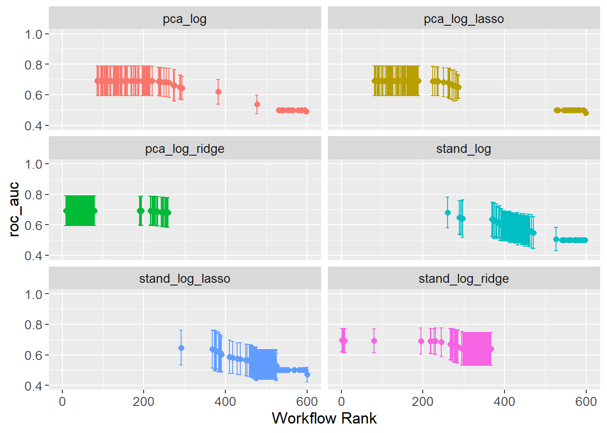

Show the code
set.seed(1337)
library("tidymodels")
tidymodels::tidymodels_prefer()
library("vegan")Set seed and load packages.
set.seed(1337)
library("tidymodels")
tidymodels::tidymodels_prefer()
library("vegan")Load data.
count_matrix_clr <- readr::read_rds("https://github.com/WilliamH-R/BioStatistics/raw/main/data/count_matrix/count_matrix_clr.rds") |>
select(-"NA")
meta <- read.csv(file = "data/metadata.txt") |>
as_tibble() |>
select(Run, chem_administration, ETHNICITY, geo_loc_name,
Host_age, host_body_mass_index, Host_disease, host_phenotype, host_sex) |>
rename(Sample = Run,
Treatment = chem_administration,
Ethnicity = ETHNICITY,
Location = geo_loc_name,
Age = Host_age,
BMI = host_body_mass_index,
Disease_severity = Host_disease,
EDSS = host_phenotype,
Sex = host_sex) |>
mutate(Patient_status = case_when(Disease_severity == "1HealthyControl" ~ "Healthy",
TRUE ~ "MS"),
EDSS = as.factor(EDSS),
EDSS = case_when(is.na(EDSS) & Disease_severity == "1HealthyControl" ~ "-1",
is.na(EDSS) & Disease_severity != "1HealthyControl" ~ "Unknown",
TRUE ~ EDSS),
EDSS = as.factor(EDSS))The data is joined with the metadata as the Patient_status is used as the outcome variable. Only the columns that are needed for the model are kept. Notice inner_join() is used such that only rows for which both the count matrix and metadata are available are kept.
count_matrix_clr <- count_matrix_clr |>
inner_join(meta,
by = "Sample") |>
select(-c(Sample, Treatment, Ethnicity, Location,
Age, BMI, Disease_severity, EDSS, Sex)) |>
relocate(Patient_status)The data is split into a training and testing set using cross-validation to avoid overfitting. This is especially needed, as some hyperparameters needs to be tuned.
The data is split:
count_matrix_clr_split <- initial_split(count_matrix_clr,
prop = params$percentage_train,
strata = Patient_status)
count_matrix_clr_train <- training(count_matrix_clr_split)
count_matrix_clr_test <- testing(count_matrix_clr_split)The CV object is created:
count_matrix_clr_folds <- vfold_cv(count_matrix_clr_train,
v = params$n_folds)
count_matrix_clr_folds# 10-fold cross-validation
# A tibble: 10 × 2
splits id
<list> <chr>
1 <split [327/37]> Fold01
2 <split [327/37]> Fold02
3 <split [327/37]> Fold03
4 <split [327/37]> Fold04
5 <split [328/36]> Fold05
6 <split [328/36]> Fold06
7 <split [328/36]> Fold07
8 <split [328/36]> Fold08
9 <split [328/36]> Fold09
10 <split [328/36]> Fold10The recipes contain two pieces of important information. The first is the formula that describes the relationship between the variables and the outcome. In this case, which genera to use for predicting disease. The second is the pre-processing steps that are applied to the data before the model is built. This could include steps such as scaling, log-transform or imputing missing values. Here, the data is already clr-transformed.
Two recipes are created. One without any pre-processing steps, and one where Principal Component Analysis (PCA) is applied to the data. In both cases, all variables is used to try and predict the outcome Patient_status.
stand_recipe <- recipe(Patient_status ~ .,
data = count_matrix_clr_train)
pca_recipe <- stand_recipe |>
step_pca(all_predictors(),
num_comp = 7)To model the data, a specification is needed. This includes the model to use, the engine to use, the mode of prediction and choosing hyperparameters. Since the outcome is binary, a logistic regression model is used. The model is later tuned using a grid search over the hyperparameters penalty and mixture. Models with exclusively Ridge and Lasso regularization are built, as well as a model with a mixture of both.
log_spec <- logistic_reg(penalty = tune(),
mixture = tune()) |>
set_engine("glmnet") |>
set_mode("classification")
log_ridge_spec <- logistic_reg(penalty = tune(),
mixture = 0) |>
set_engine("glmnet") |>
set_mode("classification")
log_lasso_spec <- logistic_reg(penalty = tune(),
mixture = 1) |>
set_engine("glmnet") |>
set_mode("classification")The hyperparameters penalty and mixture are extracted from the model specification. This is done to see the possible values that can be used in the grid search.
For the mixture, values between \(0.05\) and \(1\) is used which seem to be decent values.
log_spec |>
extract_parameter_set_dials() |>
extract_parameter_dials("mixture")Proportion of Lasso Penalty (quantitative)
Range: [0.05, 1]For the penalty, values between \(10^-10\) and \(1\) are used pr default. The range is increased to \(5*10^1\). The updated range is saved in a new object, but the information is not added to the models until the workflow is created further down. As seen from the output, the information do not pertain to a specific model, but simply contain ranges for different hyperparameters.
log_param_ranges <- log_spec |>
extract_parameter_set_dials() |>
update(penalty = penalty(c(params$penalty_lower,
params$penalty_higher)))
log_penalty_param_ranges <- log_lasso_spec |>
extract_parameter_set_dials() |>
update(penalty = penalty(c(params$penalty_lower,
params$penalty_higher)))
log_param_rangesCollection of 2 parameters for tuning
identifier type object
penalty penalty nparam[+]
mixture mixture nparam[+]log_penalty_param_rangesCollection of 1 parameters for tuning
identifier type object
penalty penalty nparam[+]The recipes are combined with the model specifications to create a workflow set. The workflow set is used to fit the models to the data and evaluate the models. Notice here it is called a workflow set, as it contains multiple workflows. Each row of the workflow set is a workflow of its own which further contain the recipe and model.
A workflow set for all combinations of recipes and models is created:
workflow_set <- workflow_set(
preproc = list(stand = stand_recipe,
pca = pca_recipe),
models = list(log = log_spec,
log_ridge = log_ridge_spec,
log_lasso = log_lasso_spec)
)
workflow_set# A workflow set/tibble: 6 × 4
wflow_id info option result
<chr> <list> <list> <list>
1 stand_log <tibble [1 × 4]> <opts[0]> <list [0]>
2 stand_log_ridge <tibble [1 × 4]> <opts[0]> <list [0]>
3 stand_log_lasso <tibble [1 × 4]> <opts[0]> <list [0]>
4 pca_log <tibble [1 × 4]> <opts[0]> <list [0]>
5 pca_log_ridge <tibble [1 × 4]> <opts[0]> <list [0]>
6 pca_log_lasso <tibble [1 × 4]> <opts[0]> <list [0]>The parameter objects which contain the hyperparameter ranges are added to the workflow:
workflow_set <- workflow_set |>
option_add(id = "stand_log",
param_info = log_param_ranges) |>
option_add(id = "pca_log",
param_info = log_param_ranges) |>
option_add(id = "stand_log_ridge",
param_info = log_penalty_param_ranges) |>
option_add(id = "stand_log_lasso",
param_info = log_penalty_param_ranges) |>
option_add(id = "pca_log_ridge",
param_info = log_penalty_param_ranges) |>
option_add(id = "pca_log_lasso",
param_info = log_penalty_param_ranges)
workflow_set# A workflow set/tibble: 6 × 4
wflow_id info option result
<chr> <list> <list> <list>
1 stand_log <tibble [1 × 4]> <opts[1]> <list [0]>
2 stand_log_ridge <tibble [1 × 4]> <opts[1]> <list [0]>
3 stand_log_lasso <tibble [1 × 4]> <opts[1]> <list [0]>
4 pca_log <tibble [1 × 4]> <opts[1]> <list [0]>
5 pca_log_ridge <tibble [1 × 4]> <opts[1]> <list [0]>
6 pca_log_lasso <tibble [1 × 4]> <opts[1]> <list [0]>All workflows in the workflow set contain hyperparameters. These are tuned with a search grid using the function tune_grid(). As workflow_set contain multiple workflows, the tune_grid() function can be mapped over the workflows to tune all hyperparameters using workflow_map(), a purrr-like map function.
Several settings for tuning the grid exists. This includes e.g. whether or not to parallelize, what output to save and how verbose the output should be, i.e. how much should be printed to std.out. The settings are set to:
grid_settings <-
control_grid(
save_pred = TRUE,
parallel_over = "everything",
save_workflow = TRUE,
extract = function(x) x
)The grid search is performed for a grid of size 10. This means that 10 different combinations of the hyperparameters are tried for each model.
grid_results <- workflow_set |>
workflow_map(
fn = "tune_grid",
seed = 1337,
resamples = count_matrix_clr_folds,
grid = params$grid_size,
control = grid_settings
)tidymodels comes with a lot of convenience functions. One of these is autoplot() that can, among other things, plot the results of the grid search. The best result of each workflow is selected based on the AUC.
autoplot(
grid_results,
rank_metric = "roc_auc",
metric = "roc_auc",
type = "wflow_id"
) +
geom_point(aes(y = mean)) +
lims(y = c(0.4, 1)) +
theme(legend.position = "none") +
facet_wrap(~ wflow_id,
ncol = 2)
The issue with wrappers, e.g. the convenience function autoplot(), is that they do not always provide the flexibility needed.
grid_results |>
collect_metrics() |>
filter(.metric == "roc_auc") |>
group_by(wflow_id) |>
arrange(desc(mean)) |>
mutate(rank = row_number()) |>
ungroup() |>
ggplot(aes(x = rank,
y = mean,
col = wflow_id)) +
geom_point() +
geom_errorbar(aes(ymin = mean - std_err,
ymax = mean + std_err)) +
theme(legend.position = "none") +
labs(x = "Rank",
y = "AUC") +
facet_wrap(~ wflow_id,
ncol = 2, scales = "free_y")
The hyperparameters resulting in the best AUC is extracted for each workflow. Note that the value of mixture is an order of magnitude different for stand_log and pca_log. In the PCA space, the model emphasizes Lasso over Ridge. This is likely due to the PCA reducing the number of variables, which in turn seems to reduce the need for setting coefficients to 0 (Lasso regularization).
Note that the value of mixture is close to zero for both Elastic Net models, which means that the model emphasizes Ridge over Lasso. Note also that the penalty is much lower for the workflow with PCA pre-processing. This is likely due to the PCA reducing the number of variables, which in turn seems to reduce the need for regularization.
workflow_ids <- grid_results |>
pull(wflow_id)
tuning_params_result <- workflow_ids |>
purrr::map(function(id) {
grid_results |>
extract_workflow_set_result(id) |>
select_best(metric = "roc_auc") |>
mutate(wflow_id = id)
}) |>
bind_rows() |>
mutate(mixture = case_when(stringr::str_detect(string = wflow_id,
pattern = "lasso") ~ 1,
stringr::str_detect(string = wflow_id,
pattern = "ridge") ~ 0,
TRUE ~ mixture)) |>
select(wflow_id, penalty, mixture)
tuning_params_result# A tibble: 6 × 3
wflow_id penalty mixture
<chr> <dbl> <dbl>
1 stand_log 6.32e- 2 0.0560
2 stand_log_ridge 3.24e+ 0 0
3 stand_log_lasso 3.85e- 2 1
4 pca_log 2.02e- 3 0.236
5 pca_log_ridge 1.13e-10 0
6 pca_log_lasso 1.13e-10 1 As the hyperparameters have been tuned, the final workflow can be created. This is done by adding the hyperparameters to the workflow. When the hyperparameters have been added, the workflows can be fitted.
workflow_set_final <- workflow_ids |>
purrr::map(function(id) {
grid_results |>
extract_workflow(id) |>
finalize_workflow(tuning_params_result |>
filter(wflow_id == id))
})
names(workflow_set_final) <- workflow_idsTo exemplify, the pca_log workflow is shown from before finalizing and after finalizing. As can be seen, the hyperparameters are added to the workflow such that they have a value instead of tune().
grid_results |>
extract_workflow("pca_log")══ Workflow ════════════════════════════════════════════════════════════════════
Preprocessor: Recipe
Model: logistic_reg()
── Preprocessor ────────────────────────────────────────────────────────────────
1 Recipe Step
• step_pca()
── Model ───────────────────────────────────────────────────────────────────────
Logistic Regression Model Specification (classification)
Main Arguments:
penalty = tune()
mixture = tune()
Computational engine: glmnet workflow_set_final$pca_log══ Workflow ════════════════════════════════════════════════════════════════════
Preprocessor: Recipe
Model: logistic_reg()
── Preprocessor ────────────────────────────────────────────────────────────────
1 Recipe Step
• step_pca()
── Model ───────────────────────────────────────────────────────────────────────
Logistic Regression Model Specification (classification)
Main Arguments:
penalty = 0.00202417340370754
mixture = 0.235985305487236
Computational engine: glmnet With the hyperparameters set, the workflows can be fit to the data, and the models can be evaluated. The last_fit() function is used to fit the model to the data. The split argument is set to the cross-validation object created earlier. This is done to avoid overfitting.
workflow_set_fit <- workflow_ids |>
purrr::map(function(id) {
workflow_set_final[[id]] |>
last_fit(split = count_matrix_clr_split)
})
names(workflow_set_fit) <- workflow_idsFor each of the fitted models, the predictions are collected and the performance is evaluated. One option is to look at the confusion matrices, e.g.:
workflow_set_fit$stand_log |>
collect_predictions()|>
conf_mat(truth = Patient_status,
estimate = .pred_class) Truth
Prediction Healthy MS
Healthy 0 1
MS 10 81Another more visual approach is to plot the ROC-curve. This is done for all models in the workflow set. First, the specificity and sensitivity is calculated for each model with a convenience function roc_curve()
roc_auc_results <- workflow_ids |>
map(function(id) {
workflow_set_fit[[id]] |>
collect_predictions() |>
roc_curve(truth = Patient_status,
.pred_MS,
event_level = "second") |>
mutate(wflow_id = id)
}) |> bind_rows()
roc_auc_results# A tibble: 564 × 4
.threshold specificity sensitivity wflow_id
<dbl> <dbl> <dbl> <chr>
1 -Inf 0 1 stand_log
2 0.498 0 1 stand_log
3 0.505 0 0.988 stand_log
4 0.570 0.1 0.988 stand_log
5 0.653 0.1 0.976 stand_log
6 0.714 0.1 0.963 stand_log
7 0.762 0.2 0.963 stand_log
8 0.781 0.2 0.951 stand_log
9 0.782 0.3 0.951 stand_log
10 0.789 0.3 0.939 stand_log
# ℹ 554 more rowsFinally, the ROC-curve is plotted stratified by the workflow ID. The ROC-curve is a plot of the sensitivity against (1 - specificity). Sensitivity is the proportion of true positives out of all positives, i.e. true positive rate. In this case, the proportion of correctly classified MS patients out of all MS patients. Specificity is the proportion of true negatives out of all negatives. In this case, the proportion of correctly classified healthy patients out of all healthy patients. Since the x-axis plots (1 - specificity), it is actually the proportion of false positives out of all negatives, i.e. the false positive rate.
roc_auc_results |>
ggplot(aes(x = 1 - specificity,
y = sensitivity,
col = wflow_id)) +
geom_path(lwd = 1,
alpha = 0.6) +
geom_abline(lty = 3) +
coord_equal() +
scale_color_viridis_d()
The hyperparameters are tuned using a grid search. The grid search is performed for a grid of size 200. The best result of each workflow is selected based on the AUC and is chosen strictly on the best numerical value. It is very possible, that a model with a slightly lower AUC is preferable due to simplicity. To investigate this, plots of the hyperparameters plotted against the AUC is created.
It can be easily illustrated with the autoplot() function. The plot is not very informative with multiple hyperparameters, as it is not shown how they affect the AUC in combination.
autoplot(grid_results,
id = "stand_log",
metric = "roc_auc")
For the two ENet models, the hyperparameters are extracted manually and plotted against the AUC. For the Ridge and Lasso models, the hyperparameters performance is plotted using the autoplot function.
By inspecting the plot, it would seem the optimal penalty is indeed at the optimum roc_auc.
autoplot(grid_results,
id = "stand_log_lasso",
metric = "roc_auc")
The manually chosen hyperparameter is collected.
stand_log_lasso_penalty <- grid_results |>
extract_workflow_set_result("stand_log_lasso") |>
show_best(metric = "roc_auc",
n = 1) |>
pull(penalty)
stand_log_lasso_mixture <- 1By inspecting the plot, it would seem the optimal penalty is indeed at the optimum roc_auc.
autoplot(grid_results,
id = "stand_log_ridge",
metric = "roc_auc")
The manually chosen hyperparameter is collected.
stand_log_ridge_penalty <- grid_results |>
extract_workflow_set_result("stand_log_ridge") |>
show_best(metric = "roc_auc",
n = 1) |>
pull(penalty)
stand_log_ridge_mixture <- 0For the ENet models, two parameters are tuned: penalty and mixture. Instead of plotting against AUC, the hyperparameters are plotted against each other, and the color represents the AUC. The best AUC are the more purple colors. The plot shows that the best AUC is achieved with a penalty close to zero.
stand_log_plot <- grid_results |>
extract_workflow_set_result("stand_log") |>
show_best(metric = "roc_auc",
n = params$grid_size) |>
ggplot(aes(x = penalty,
y = mixture,
col = mean)) +
geom_point() +
scale_color_viridis_c(direction = -1) +
labs(title = "Standard Preprocessing, Elastic Net",
x = "Penalty",
y = "Mixture",
col = "AUC")
stand_log_plot
To better see the effect of the hyperparameters on the AUC, the x-axis is limited as the higher values are observed close to \(penalty = 0\).
p <- stand_log_plot +
lims(x = c(0, 1))
plotly::ggplotly(p)stand_log_penalty <- 0.06319747
stand_log_mixture <- 0.05603853By inspecting the plot, it would seem the optimal penalty is indeed at the optimum roc_auc.
autoplot(grid_results,
id = "pca_log_lasso",
metric = "roc_auc")
The manually chosen hyperparameter is collected.
pca_log_lasso_penalty <- grid_results |>
extract_workflow_set_result("pca_log_lasso") |>
show_best(metric = "roc_auc",
n = 1) |>
pull(penalty)
pca_log_lasso_mixture <- 1By inspecting the plot, the ROC values do not vary much with the penalty. The optimal penalty is chosen to be the maximum penalty.
autoplot(grid_results,
id = "pca_log_ridge",
metric = "roc_auc")
The manually chosen hyperparameter is collected.
pca_log_ridge_penalty <- grid_results |>
extract_workflow_set_result("pca_log_ridge") |>
show_best(metric = "roc_auc",
n = params$grid_size) |>
pull(penalty) |>
max()
pca_log_ridge_mixture <- 0Again, the hyperparameter values are plotted against each other, and the colour signifies the AUC. The best AUC are the more purple colors.
pca_log_plot <- grid_results |>
extract_workflow_set_result("pca_log") |>
show_best(metric = "roc_auc",
n = params$grid_size) |>
ggplot(aes(x = penalty,
y = mixture,
col = mean)) +
geom_point() +
scale_color_viridis_c(direction = -1) +
labs(title = "PCA Preprocessing, Elastic Net",
x = "Penalty",
y = "Mixture",
col = "AUC")
pca_log_plot
To better see the effect of the hyperparameters on the AUC, the x-axis is limited as the higher values are observed close to \(penalty = 0\).
p <- pca_log_plot +
lims(x = c(0, 1))
plotly::ggplotly(p)By inspecting the plotly object, the parameters are chosen.
pca_log_penalty <- 0.3379935
pca_log_mixture <- 0.12525226tuning_params_result_manual <- tribble(~wflow_id, ~penalty, ~mixture,
"stand_log_lasso", stand_log_lasso_penalty, 1,
"stand_log_ridge", stand_log_ridge_penalty, 0,
"stand_log", stand_log_penalty, stand_log_mixture,
"pca_log_lasso", pca_log_lasso_penalty, 1,
"pca_log_ridge", pca_log_ridge_penalty, 0,
"pca_log", pca_log_penalty, pca_log_mixture)The finalization, fitting and predicting is done as before, but with the manually chosen hyperparameters.
# Finalize
workflow_set_final_manual <- workflow_ids |>
purrr::map(function(id) {
grid_results |>
extract_workflow(id) |>
finalize_workflow(tuning_params_result_manual |>
filter(wflow_id == id))
})
names(workflow_set_final_manual) <- workflow_ids
# Fit
workflow_set_fit_manual <- workflow_ids |>
purrr::map(function(id) {
workflow_set_final_manual[[id]] |>
last_fit(split = count_matrix_clr_split)
})
names(workflow_set_fit_manual) <- workflow_ids
# Predict
roc_auc_results_manual <- workflow_ids |>
map(function(id) {
workflow_set_fit_manual[[id]] |>
collect_predictions() |>
roc_curve(truth = Patient_status,
.pred_MS,
event_level = "second") |>
mutate(wflow_id = id)
}) |> bind_rows()
# Visualize performance
roc_auc_results_manual |>
ggplot(aes(x = 1 - specificity,
y = sensitivity,
col = wflow_id)) +
geom_path(lwd = 1,
alpha = 0.6) +
geom_abline(lty = 3) +
coord_equal() +
scale_color_viridis_d()
sessioninfo::session_info()─ Session info ───────────────────────────────────────────────────────────────
setting value
version R version 4.3.3 (2024-02-29 ucrt)
os Windows 11 x64 (build 22631)
system x86_64, mingw32
ui RTerm
language (EN)
collate English_United Kingdom.utf8
ctype English_United Kingdom.utf8
tz Europe/Copenhagen
date 2024-05-25
pandoc 3.1.11 @ C:/Program Files/RStudio/resources/app/bin/quarto/bin/tools/ (via rmarkdown)
─ Packages ───────────────────────────────────────────────────────────────────
package * version date (UTC) lib source
backports 1.4.1 2021-12-13 [1] CRAN (R 4.3.1)
broom * 1.0.5 2023-06-09 [1] CRAN (R 4.3.3)
cachem 1.0.8 2023-05-01 [1] CRAN (R 4.3.3)
class 7.3-22 2023-05-03 [2] CRAN (R 4.3.3)
cli 3.6.2 2023-12-11 [1] CRAN (R 4.3.3)
cluster 2.1.6 2023-12-01 [2] CRAN (R 4.3.3)
codetools 0.2-19 2023-02-01 [2] CRAN (R 4.3.3)
colorspace 2.1-0 2023-01-23 [1] CRAN (R 4.3.3)
conflicted 1.2.0 2023-02-01 [1] CRAN (R 4.3.3)
crosstalk 1.2.1 2023-11-23 [1] CRAN (R 4.3.3)
data.table 1.15.4 2024-03-30 [1] CRAN (R 4.3.3)
dials * 1.2.1 2024-02-22 [1] CRAN (R 4.3.3)
DiceDesign 1.10 2023-12-07 [1] CRAN (R 4.3.3)
digest 0.6.35 2024-03-11 [1] CRAN (R 4.3.3)
dplyr * 1.1.4 2023-11-17 [1] CRAN (R 4.3.2)
ellipsis 0.3.2 2021-04-29 [1] CRAN (R 4.3.3)
evaluate 0.23 2023-11-01 [1] CRAN (R 4.3.3)
fansi 1.0.6 2023-12-08 [1] CRAN (R 4.3.3)
farver 2.1.1 2022-07-06 [1] CRAN (R 4.3.3)
fastmap 1.1.1 2023-02-24 [1] CRAN (R 4.3.3)
foreach 1.5.2 2022-02-02 [1] CRAN (R 4.3.3)
furrr 0.3.1 2022-08-15 [1] CRAN (R 4.3.3)
future 1.33.2 2024-03-26 [1] CRAN (R 4.3.3)
future.apply 1.11.2 2024-03-28 [1] CRAN (R 4.3.3)
generics 0.1.3 2022-07-05 [1] CRAN (R 4.3.3)
ggplot2 * 3.5.1 2024-04-23 [1] CRAN (R 4.3.3)
glmnet * 4.1-8 2023-08-22 [1] CRAN (R 4.3.3)
globals 0.16.3 2024-03-08 [1] CRAN (R 4.3.3)
glue 1.7.0 2024-01-09 [1] CRAN (R 4.3.3)
gower 1.0.1 2022-12-22 [1] CRAN (R 4.3.1)
GPfit 1.0-8 2019-02-08 [1] CRAN (R 4.3.3)
gtable 0.3.5 2024-04-22 [1] CRAN (R 4.3.3)
hardhat 1.3.1 2024-02-02 [1] CRAN (R 4.3.3)
hms 1.1.3 2023-03-21 [1] CRAN (R 4.3.3)
htmltools 0.5.8.1 2024-04-04 [1] CRAN (R 4.3.3)
htmlwidgets 1.6.4 2023-12-06 [1] CRAN (R 4.3.3)
httr 1.4.7 2023-08-15 [1] CRAN (R 4.3.3)
infer * 1.0.7 2024-03-25 [1] CRAN (R 4.3.3)
ipred 0.9-14 2023-03-09 [1] CRAN (R 4.3.3)
iterators 1.0.14 2022-02-05 [1] CRAN (R 4.3.3)
jsonlite 1.8.8 2023-12-04 [1] CRAN (R 4.3.3)
knitr 1.46 2024-04-06 [1] CRAN (R 4.3.3)
labeling 0.4.3 2023-08-29 [1] CRAN (R 4.3.1)
lattice * 0.22-5 2023-10-24 [2] CRAN (R 4.3.3)
lava 1.8.0 2024-03-05 [1] CRAN (R 4.3.3)
lazyeval 0.2.2 2019-03-15 [1] CRAN (R 4.3.3)
lhs 1.1.6 2022-12-17 [1] CRAN (R 4.3.3)
lifecycle 1.0.4 2023-11-07 [1] CRAN (R 4.3.3)
listenv 0.9.1 2024-01-29 [1] CRAN (R 4.3.3)
lubridate 1.9.3 2023-09-27 [1] CRAN (R 4.3.3)
magrittr 2.0.3 2022-03-30 [1] CRAN (R 4.3.3)
MASS 7.3-60.0.1 2024-01-13 [2] CRAN (R 4.3.3)
Matrix * 1.6-5 2024-01-11 [2] CRAN (R 4.3.3)
memoise 2.0.1 2021-11-26 [1] CRAN (R 4.3.3)
mgcv 1.9-1 2023-12-21 [2] CRAN (R 4.3.3)
modeldata * 1.3.0 2024-01-21 [1] CRAN (R 4.3.3)
munsell 0.5.1 2024-04-01 [1] CRAN (R 4.3.3)
nlme 3.1-164 2023-11-27 [2] CRAN (R 4.3.3)
nnet 7.3-19 2023-05-03 [2] CRAN (R 4.3.3)
parallelly 1.37.1 2024-02-29 [1] CRAN (R 4.3.3)
parsnip * 1.2.1 2024-03-22 [1] CRAN (R 4.3.3)
permute * 0.9-7 2022-01-27 [1] CRAN (R 4.3.3)
pillar 1.9.0 2023-03-22 [1] CRAN (R 4.3.3)
pkgconfig 2.0.3 2019-09-22 [1] CRAN (R 4.3.3)
plotly 4.10.4 2024-01-13 [1] CRAN (R 4.3.3)
prodlim 2023.08.28 2023-08-28 [1] CRAN (R 4.3.3)
purrr * 1.0.2 2023-08-10 [1] CRAN (R 4.3.3)
R6 2.5.1 2021-08-19 [1] CRAN (R 4.3.3)
Rcpp 1.0.12 2024-01-09 [1] CRAN (R 4.3.3)
readr 2.1.5 2024-01-10 [1] CRAN (R 4.3.3)
recipes * 1.0.10 2024-02-18 [1] CRAN (R 4.3.3)
rlang 1.1.3 2024-01-10 [1] CRAN (R 4.3.3)
rmarkdown 2.26 2024-03-05 [1] CRAN (R 4.3.3)
rpart 4.1.23 2023-12-05 [2] CRAN (R 4.3.3)
rsample * 1.2.1 2024-03-25 [1] CRAN (R 4.3.3)
rstudioapi 0.16.0 2024-03-24 [1] CRAN (R 4.3.3)
scales * 1.3.0 2023-11-28 [1] CRAN (R 4.3.3)
sessioninfo 1.2.2 2021-12-06 [1] CRAN (R 4.3.3)
shape 1.4.6.1 2024-02-23 [1] CRAN (R 4.3.2)
stringi 1.8.3 2023-12-11 [1] CRAN (R 4.3.2)
stringr 1.5.1 2023-11-14 [1] CRAN (R 4.3.3)
survival 3.5-8 2024-02-14 [2] CRAN (R 4.3.3)
tibble * 3.2.1 2023-03-20 [1] CRAN (R 4.3.3)
tidymodels * 1.2.0 2024-03-25 [1] CRAN (R 4.3.3)
tidyr * 1.3.1 2024-01-24 [1] CRAN (R 4.3.3)
tidyselect 1.2.1 2024-03-11 [1] CRAN (R 4.3.3)
timechange 0.3.0 2024-01-18 [1] CRAN (R 4.3.3)
timeDate 4032.109 2023-12-14 [1] CRAN (R 4.3.2)
tune * 1.2.1 2024-04-18 [1] CRAN (R 4.3.3)
tzdb 0.4.0 2023-05-12 [1] CRAN (R 4.3.3)
utf8 1.2.4 2023-10-22 [1] CRAN (R 4.3.3)
vctrs 0.6.5 2023-12-01 [1] CRAN (R 4.3.3)
vegan * 2.6-4 2022-10-11 [1] CRAN (R 4.3.3)
viridisLite 0.4.2 2023-05-02 [1] CRAN (R 4.3.3)
withr 3.0.0 2024-01-16 [1] CRAN (R 4.3.3)
workflows * 1.1.4 2024-02-19 [1] CRAN (R 4.3.3)
workflowsets * 1.1.0 2024-03-21 [1] CRAN (R 4.3.3)
xfun 0.43 2024-03-25 [1] CRAN (R 4.3.3)
yaml 2.3.8 2023-12-11 [1] CRAN (R 4.3.2)
yardstick * 1.3.1 2024-03-21 [1] CRAN (R 4.3.3)
[1] C:/Users/Willi/AppData/Local/R/win-library/4.3
[2] C:/Program Files/R/R-4.3.3/library
──────────────────────────────────────────────────────────────────────────────